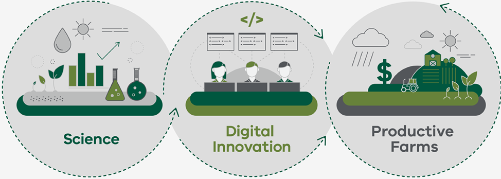
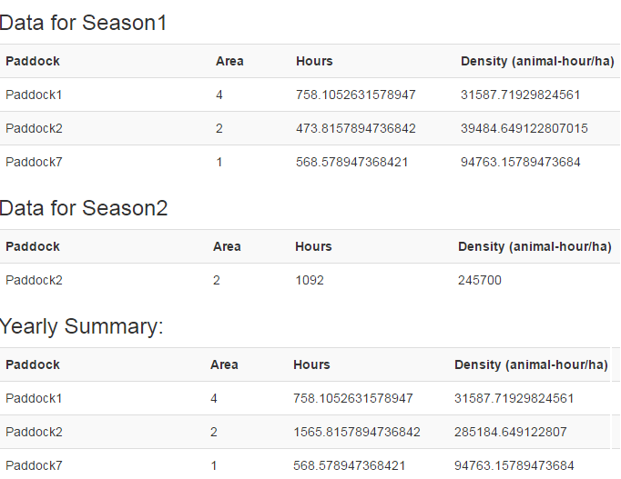
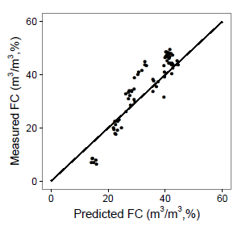

Issue 3 - Winter 2017
The rise of apps in agriculture
A quick Google search for ‘farm management app development’ provides a plethora of results, with the top 17 including nine apps for Australian farm management, three webpages that assist you to find the right app, and five businesses that will build the app you need. An article published in ‘The Land’ on 2nd January 2017 identified the ‘Ten farming apps you should download’, and exploring The Farm Table identified specific apps for a wide range of agricultural industries and business needs, including:
- map crop rotations, pest burdens, inputs and outputs
- livestock management and mapping (movement, treatments, health records, purchases, sales, calving, ID tagging)
- manage and track information on agriculture and veterinary products and chemicals
- plan mixed ration feeding for drought conditions
- record keeping and reporting
- diseases and syndromes for livestock and treatment options
- manage soil test results
- geo-spatial farm mapping
- silo management
- farm fuel usage
- feed budgeting
- weather forecasting
- map sightings of pest animals
- grazing plan management

Image: Schematic diagram demonstrating the connection between science and the farm through innovative digital solutions such as FarmBuild.
FarmBuild is working to make it easier to build useful farm management tools based on Agriculture Victoria science. Experts can use FarmBuild to access map services, farm nutrient balance models and local soil data, enabling them to develop apps that their farming clients need. FarmBuild provides our current science in a useable form, through an open source repository of web services and application programming interfaces (API) that can be used by anyone, at any time.
For information on what FarmBuild can do and the online functions available – check it out here.
Or if you are a savvy developer – check out FarmBuild’s open-source repository on GitHub.
GovHack, supported by 13 Australian Government departments, was held on 28-30th of July at various locations around Australia and New Zealand. GovHack encourages and celebrates the technical and creative capacity of software developers to build on the social and economic value of open data published by government. With over 470 projects developed during GovHack2016, we look forward to seeing what was created at GovHack2017! Check it out at govhack.org!
What's New?
Dairy Animal Density Calculator

Image: Screenshot showing an example of the output you could generate using the Dairy Animal Density Calculator now available on FarmBuild.
A dairy animal density calculator will support the mapping and monitoring of how cows/animals move across a farm according to animal-hour, paddock area and number of animals. Now available on GitHub - https://github.com/FarmBuild/farmbuild-dairy-animal-density-calculator.
This new function provides a generic open source model, enabling it to be integrated with a range of applications including nutrient and grazing models.
Feedback
A paddock mapping tool has been developed by a registered user of FarmBuild, who gave FarmBuild a 10/10 for assisting to create a better application. The FarmBuild functions used included the Soil Area Calculation Service, Web Mapping, Whole Farm Nutrient Balance Calculator (Dairy) and Map Print Service. FarmBuild was useful because “we do not have to create web mapping from scratch…printing [map print service] is very helpful for farmers to manually draw on maps”. This user gave the FarmBuild platform a 4 out of 5 for ease of use.
FarmBuild Community of Developers
Jardine AgriServices
Email: scott@jardineag.com.au
Mobile: 0415 616 114
If you have experience developing an app or tool using FarmBuild and would like to offer your services to other FarmBuild users, please email Hayden.Lewis@ecodev.vic.gov.au.
Concept in Development
Soil Water PedoTransfer Function
A Soil Water PedoTransfer Function (PTF) for FarmBuild aims to provide an online function for calculating soil-water relationships, such as field capacity (FC), permanent wilting point (PWP) and plant available water (PAW). Agriculture Victoria researchers Dr Abdur Rab and Dr Nathan Robinson have considerable expertise in this area and are working with the FarmBuild team to configure this new function.
PTFs allow the prediction of soil characteristics, such as soil water, using an algorithm crafted on more easily attainable soil measurements such as soil type and texture. Years of research calibrate the predicted soil characteristics using a PTF as closely as possible to the measure soil characteristics.

Image: Example of calibrating soil-water PTF of Field Capacity (FC) with measured FC (Rab et al. (2011) Soil Research 49, 389-401).
A FarmBuild Soil Water PTF needs to be incorporated into the app or web-based tool of an agribusiness initiative. The opportunity to create new apps or web-based tools with FarmBuild functions is only limited by developer ideas!
Contact Us
Hayden Lewis - 03 5833 5997
Email: Hayden.Lewis@ecodev.vic.gov.au
Register for FarmBuild
For more information on registering, please click here
TweetBack to FarmBuild